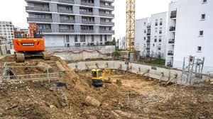
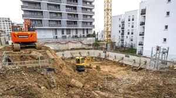

À propos de Bati Pro
Bati Pro est une entreprise spécialisée dans les travaux de bâtiment et de construction, intervenant dans la conception, la réalisation et la rénovation de projets modernes adaptés aux besoins de nos clients.
Forts de notre expérience dans le domaine du bâtiment, nous accompagnons nos clients à chaque étape de leur projet, depuis l’étude et la planification jusqu’à la livraison finale des travaux. Notre approche repose sur l’écoute, la rigueur et le respect des exigences techniques et architecturales.
Notre équipe est composée de professionnels qualifiés, passionnés par la construction et l’architecture moderne. Chaque projet est réalisé avec soin, en tenant compte des normes de sécurité, de la qualité des matériaux et du respect des délais.
Chez Bati Pro, nous croyons que la réussite d’un projet repose sur une collaboration étroite avec nos clients. C’est pourquoi nous proposons des solutions personnalisées, adaptées au budget et aux attentes de chacun, tout en garantissant des résultats durables et fiables.
Notre mission est de transformer vos idées en réalisations concrètes, solides et esthétiques, tout en contribuant au développement d’infrastructures modernes et responsables.
 
